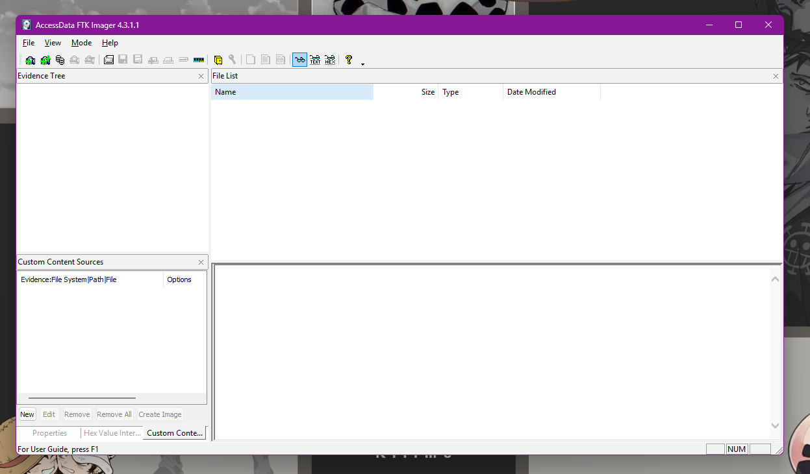
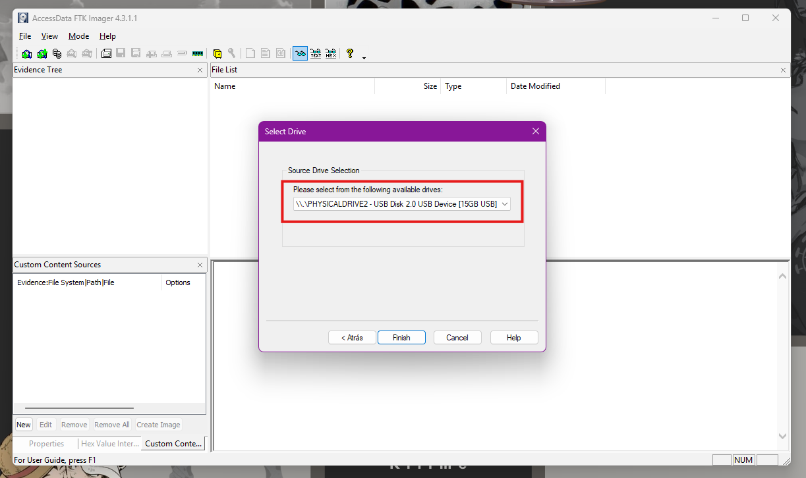
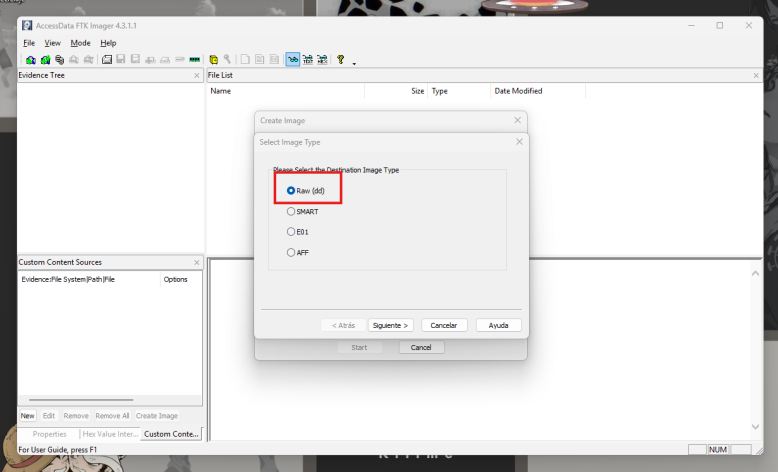
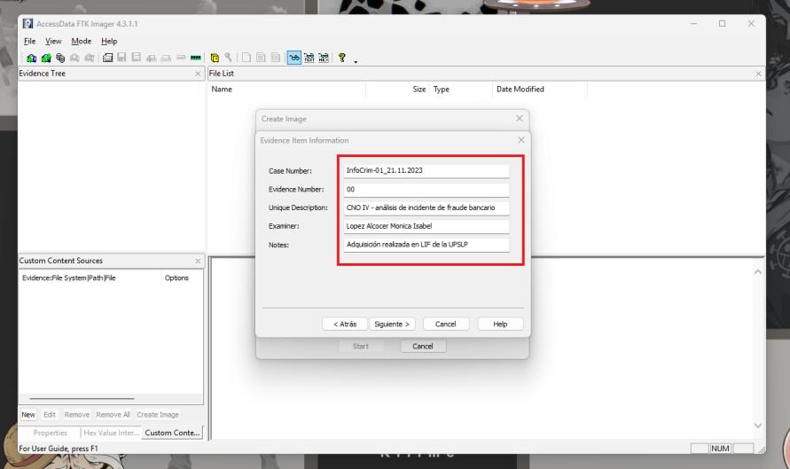
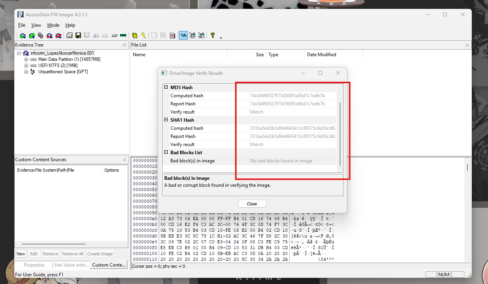
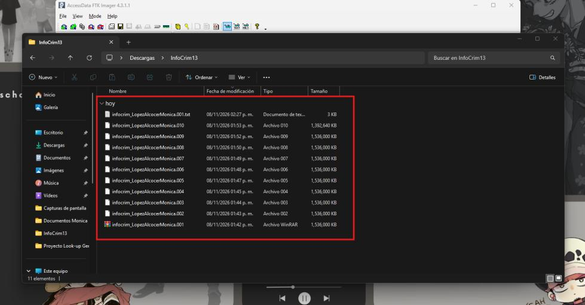

La verdad en los bits
Adquisición forense bit a bit de una memoria USB con FTK Imager, para un caso de fraude bancario
Introducción
Antes de analizar cualquier evidencia digital hay que asegurarla sin alterarla. Esta actividad aplica esa primera fase del análisis forense —la adquisición— sobre una memoria USB, usando FTK Imager para obtener una copia exacta, bit a bit, del dispositivo completo, en el contexto simulado de un caso de fraude bancario.
Objetivo
Desarrollar habilidades prácticas en el uso de herramientas de código abierto para la obtención de evidencia digital: crear una imagen forense de una memoria USB con FTK Imager, documentar el proceso paso a paso y verificar su integridad mediante hash.
El proceso de adquisición
Con FTK Imager 4.3.1.1 instalado y ejecutado como administrador (requisito para acceder a las unidades físicas), se conectó una memoria USB personal como evidencia.


El paso más importante de todo el proceso fue elegir Physical Drive y no una unidad lógica: Windows reconoció la memoria como dos unidades (E: y F:, por tratarse de un USB booteable creado con Rufus), pero una imagen lógica de cualquiera de las dos habría dejado fuera la tabla de particiones, la otra partición y el espacio no asignado. Se identificó con cuidado el disco correcto para no confundirlo con el SSD interno del equipo.


Como tipo de imagen se eligió Raw (dd): una copia cruda, sin compresión, compatible con prácticamente cualquier herramienta forense. Después se capturó la información del caso (número de caso, examinador, descripción), que FTK Imager incorpora al reporte final.




Verificación de integridad
Lo más importante de toda la adquisición no es la copia en sí, sino poder demostrar que es idéntica al original. Para eso sirven los hash: FTK Imager calculó el MD5 y el SHA-1 de la memoria al leerla y los comparó contra los de la imagen ya creada. Ambos coincidieron (Match) y no se encontraron bloques dañados — la prueba de que la copia es exacta, bit por bit, y de que el análisis puede hacerse sobre ella sin cuestionar su validez.


Al terminar, la adquisición quedó dividida en 10 segmentos (por el tamaño de fragmento de 1500 MB)
más un archivo .txt con el reporte completo: datos del caso, marcas de tiempo, hash y
los datos técnicos de la memoria (modelo, número de serie, geometría del disco).


Raw, SMART y E01: tres formatos de imagen forense
No todos los formatos de imagen forense guardan lo mismo. La diferencia clave está en qué tanto incorporan dentro del propio archivo:
| Característica | Raw (dd) | SMART (.s01) | E01 (EWF) |
|---|---|---|---|
| Copia bit a bit | Sí | Sí | Sí |
| Compresión | No | Sí | Sí |
| Metadatos del caso en la imagen | No (aparte) | Sí | Sí |
| Compatibilidad | Universal | Limitada | Muy amplia (estándar de facto) |
Se eligió Raw (dd) por su compatibilidad universal; a cambio, el reporte .txt debe conservarse siempre junto con la imagen, porque el formato no guarda esos datos dentro de sí.
Aprendizajes obtenidos
- Entendí por qué en forense digital se copia el disco físico completo y no solo las unidades lógicas visibles: ahí vive la tabla de particiones y el espacio no asignado, donde también hay evidencia.
- Comprobé en la práctica para qué sirve verificar con dos algoritmos de hash: si uno coincide pero el otro no, algo cambió; si ambos coinciden, la copia es confiable.
- Sin bloqueador de escritura, el propio sistema operativo puede modificar la evidencia al conectarla — una limitación real que hay que documentar, no ignorar.
Conclusión
Esta práctica deja clara la regla de oro del análisis forense: nunca se trabaja sobre el original. Con FTK Imager se obtuvo una copia bit a bit de la memoria USB, verificada con hash MD5 y SHA-1 coincidentes, lista para ser analizada sin poner en duda su integridad. En un caso real, esa verificación es exactamente lo que sostiene a la evidencia frente a un cuestionamiento legal.